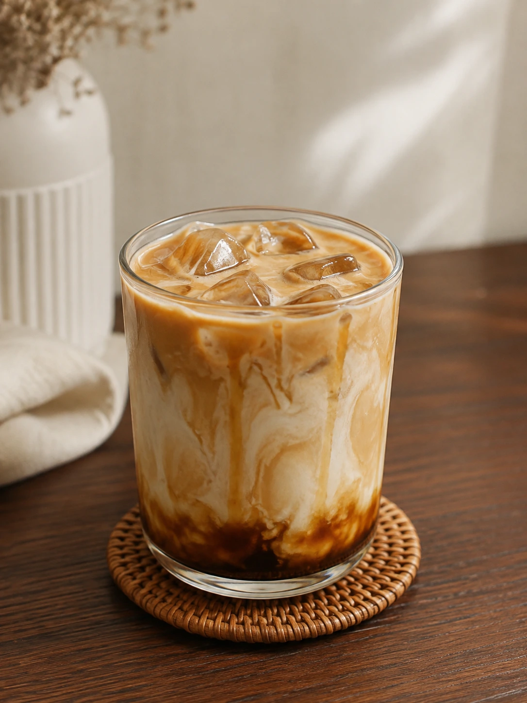

Sistem operasi untuk kedai kecil & cafe
Dari kasir sampai laba, semua tersusun rapi.
Rakku menyatukan transaksi, stok bahan baku, resep, outlet, dan laporan laba rugi supaya Anda bisa mengurus bisnis tanpa kehilangan jejak.
Mulai dari satu outlet. Tumbuh tanpa memindahkan data.
Live register
Outlet aktifKasir / Register
Tembalang
Cari produk...K
All ItemsCoffeePastryNon-Coffee
2 itemRp 42.000Detail →
+ Stok mengikuti resep
Satu alur kerja untuk
KasirStokResepOutletLaba
bukan lima spreadsheet terpisah.
01 / Kenapa Rakku
Bisnis Anda bergerak cepat. Sistemnya harus ikut.
Kedai kecil tidak butuh software yang terasa seperti ERP. Anda butuh satu tempat yang mengerti ritme buka toko, antrean kasir, bahan yang berkurang, dan keputusan yang harus dibuat sebelum jam ramai.
01
Owner melihat apa yang terjadi di tiap outlet, tanpa harus selalu berada di sana.
02
Kasir bekerja cepat dengan POS yang fokus pada pesanan, meja, dan pembayaran.
03
Stok dan HPP mengikuti resep, bukan perkiraan di akhir bulan.
02 / Yang Anda dapatkan
Kerja harian lebih ringan.
Keputusan lebih tajam.
Fitur Rakku dirancang dari alur nyata kedai dan cafe kecil, dari produk pertama sampai laporan laba rugi.
A / Kasir
Transaksi tanpa menghambat antrean.
Register yang cepat untuk produk, modifier, tier harga, meja, pembayaran, split bill, dan invoice.
Dine in / Take away / QRIS / TunaiB / Inventory
Bahan baku yang ikut bergerak.
Hubungkan produk ke resep. Setiap order selesai, stok berkurang dan jejaknya tersimpan.
C / Owner
Laba, bukan sekadar omzet.
Lihat omzet, HPP, pengeluaran, laba kotor, dan laba bersih dalam satu laporan.
D / Multi-outlet
Satu pemilik. Banyak outlet. Tetap terarah.
Kelola outlet, karyawan, produk, akses menu, dan laporan dalam konteks yang jelas per cabang.
E / Akses
Setiap orang melihat yang perlu.
Role dan akses menu dinamis untuk menjaga operasional tetap aman dan tidak membingungkan.
F / QR Menu
Menu digital tanpa aplikasi.
Buat QR menu view-only untuk tiap outlet. Pelanggan cukup scan dan melihat katalog terbaru.
03 / Alur kerja
Mulai sederhana.
Tumbuh dengan tenang.
Rakku tidak memaksa Anda mengubah cara kerja dalam semalam. Mulai dari alur yang paling penting, lalu tambahkan detail saat bisnis siap.
01
Buat outlet
Daftar sebagai Owner, buat company, lalu mulai dari outlet pertama Anda.
02
Susun produk & resep
Atur kategori, tier harga, modifier, bahan baku, dan resep produk.
03
Kasir mulai berjualan
Kasir login dengan alur cepat dan fokus menyelesaikan pesanan.
04
Pantau yang penting
Gunakan data penjualan, stok, HPP, dan pengeluaran untuk mengambil keputusan.
04 / Dari resep ke stok
Satu gelas kopi.
Jejaknya jelas.
Rakku menggunakan resep yang sama untuk menghitung pemakaian bahan, HPP, dan peringatan stok. Tidak ada mekanisme terpisah untuk produk jadi atau resale.
Lihat fitur inventoryPRODUCT / EDITproducts / editAktif
Edit Produk
Simpan
Kopi Susu Gula Aren
Konfigurasi untuk sistem inventory dan POS
Status ProdukAktif
Nama ProdukKopi Susu Gula Aren
KategoriCoffee
Resep / Bahan BakuBahan terpakai per 1 porsi produk ini
Kelola ResepEspresso Beans5.000 gram tersedia
18 gramAktifSusu UHT20.000 ml tersedia
150 mlAktifCup 16oz380 pcs tersedia
1 pcsAktifStok mengikuti penjualanOtomatis berkurang setelah order selesai
HPP Rp 8.45005 / Dua layar, satu ritme
Owner berpikir jauh.
Kasir bergerak cepat.
Permukaan kerja yang berbeda untuk kebutuhan yang berbeda, tetap terhubung lewat data outlet yang sama.
Portal Owner↗
Untuk keputusan
di balik layar.
Kelola outlet, tim, katalog, harga, resep, pengeluaran, dan laporan laba dari satu dashboard.
Outlet & karyawanHPP & laba rugiQR menu per outlet
POS Kasir↗
Untuk transaksi
di garis depan.
Login 4 langkah, pilih produk, atur modifier, kelola meja, terima pembayaran, dan cetak invoice.
Register cepatDraft & split billPWA untuk operasional
06 / Pertanyaan umum
Yang perlu diketahui
sebelum mulai.
Rakku dibuat untuk kedai dan cafe kecil yang ingin bekerja lebih teratur tanpa menambah kerumitan.
Apakah Rakku hanya untuk cafe?
Rakku paling cocok untuk kedai kopi, cafe, dan bisnis F&B kecil yang memiliki produk, transaksi, bahan baku, dan satu atau beberapa outlet.
Apakah stok langsung berkurang saat transaksi?
Ya. Setelah order berstatus selesai, stok bahan akan berkurang mengikuti resep produk dan tercatat di stock movement.
Apakah stok yang kurang akan memblokir transaksi?
Tidak. Stok boleh minus agar operasional tidak berhenti. Rakku memberi peringatan supaya tim bisa melakukan pengecekan atau restock.
Apakah menu QR bisa menerima pesanan langsung?
Belum. Menu QR pada fase ini bersifat view-only. Pelanggan dapat melihat katalog dan harga tanpa login atau memasang aplikasi.
Siapa yang bisa melihat laporan laba?
Laporan HPP dan laba rugi ditujukan untuk Owner. Akses menu dapat diatur sesuai role perusahaan.
Mulai dari sini
Rapi dulu.
Tumbuh kemudian.
Bangun fondasi operasional yang bisa mengikuti cara bisnis Anda berkembang.